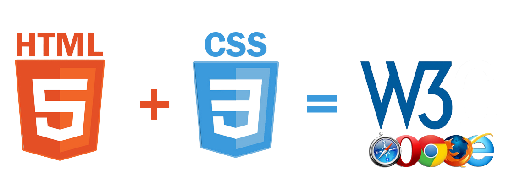

W3C 😀
The World Wide Web Consortium is the main international standards organization for the World Wide Web. Founded in 1994 and currently led by Tim Berners-Lee, the consortium is made up of member organizations that maintain full-time staff working together in the development of standards for the World Wide Web.
HTML
Hypertext Markup Language is the standard markup language for documents designed to be displayed in a web browser. It can be assisted by technologies such as Cascading Style Sheets and scripting languages such as JavaScript.
CSS
Cascading Style Sheets is a style sheet language used for describing the presentation of a document written in a markup language such as HTML. CSS is a cornerstone technology of the World Wide Web, alongside HTML and JavaScript.

Purpose & Example
CSS is the language for describing the presentation of Web pages, including colors, layout, and fonts. It allows one to adapt the presentation to different types of devices, such as large screens, small screens, or printers. CSS is independent of HTML and can be used with any XML-based markup language .